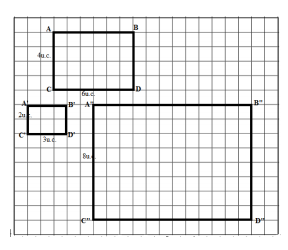
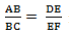

CAPÍTULO 3 – A PROPORCIONALIDADE NO CONTEXTO A INDÚSTRIA PETROLÍFERA
Contextualizando
A indústria do petróleo inclui os processos globais de exploração, extração, refino, transporte e comercialização de produtos derivados do petróleo. Os produtos de maior volume desta indústria são o óleo combustível e a gasolina. A Indústria do Petróleo ou petrolífera é uma indústria integrada do poço ao posto, ou seja, ela abrange desde a prospecção do petróleo até a distribuição de seus derivados para os consumidores. A parte mais preliminar da Indústria petrolífera é a prospecção de petróleo, durante a qual novas jazidas desse bem mineral são descobertas (como foi o caso do nosso pré-sal). Uma vez descobertas, as jazidas de petróleo devem ser delimitadas e dimensionadas. Essas duas fases compõem o que se chama de FASE DE EXPLORAÇÃO do petróleo. Uma vez descoberta e dimensionada, uma jazida ou campo de petróleo é colocado em produção através da perfuração de uma malha de poços feita com esse propósito (FASE DE PRODUÇÃO). O petróleo assim extraído é transportado por oleodutos até as refinarias (FASE DE TRANSPORTE). O petróleo é então refinado e dá origem a centenas de milhares de produtos que usamos no nosso dia a dia, através da Indústria petroquímica (FASE DE REFINO). Saindo das refinarias, compostos como a gasolina e o óleo diesel são transportados até os postos distribuidores (FASE DE DISTRIBUIÇÃO), onde abastecem os diferentes veículos. Na Indústria Petroquímica, são produzidos os plásticos, a borracha sintética e outros milhares de produtos presentes em uma infinidade de materiais que nos cercam
Dada a variedade de produtos e serviços relacionados à indústria petrolífera, desde a busca de jazidas até a fase de distribuição, os técnicos que trabalham necessitam de inúmeros conhecimentos matemáticos, entre eles o de proporcionalidade que é base para outros conceitos matemáticos que também são necessários para resolver problemas relacionados à indústria petrolífera.
Que outros conceitos matemáticos estão relacionados ao conceito de proporcionalidade?
Caro aluno!
Nesse capítulo, você vai reconstruir os conceitos de razão e proporção, conhecer e aplicar as propriedades das figuras semelhantes, conhecer o Teorema de Tales e suas aplicações e compreender a importância da proporcionalidade como um conceito que embasa vários outros conceitos matemáticos, conhecimentos necessários para a resolução de problemas próprios da Indústria Petrolífera.
Para iniciar esse capítulo, vamos retomar os conceitos de razão, razão de proporcionalidade, e proporção. O conceito de razão é usado em Matemática para indicar a comparação de dois números a e b, nessa ordem, através de uma divisão em que o divisor, o termo b, é diferente de zero. Quando referimos a razão entre dois segmentos, queremos dizer a razão entre suas medidas tomadas na mesma unidade.
Observe a figura e analise o exemplo, a razão entre os segmentos AB e BC abaixo é 3/5.
Denomine a razão 3/5 de razão de semelhança, verificando que é a razão 3/5 , que você lê 3 para 5, o que significa 3 unidades para 5 unidades. Analise, agora, a razão entre os segmentos A1B1 e B1C1 que é 6/4, o que significa 6 para 10. Observando a figura, você verifica que 3/5 = 6/10 = 1/2.
A igualdade entre duas razões é uma proporção, logo 3/5 = 6/10, é uma proporção que você lê 3 está para cinco assim como 6 está para 10, A fração 1/2 é a razão de proporcionalidade, pois é a razão mais simples.
Na proporção 3/5 = 6/10, como se lê: “três está para cinco assim como seis está para 10”, os elementos 3 e 10 são os extremos e 5 e 6 são os meios.
As proporções possuem a seguinte propriedade: “em uma proporção, o produto dos extremos é igual ao produto dos meios.” Essa propriedade pode ser colocada em prática na verificação da proporcionalidade, realizando uma operação denominada multiplicação cruzada.

Assista ao vídeo
A REGRA DE TRÊS
As proporções têm grande aplicabilidade na resolução de problemas que envolvem informações comparativas. Nessas situações de proporcionalidade, a regra três é usada no intuito de calcular o quarto valor de uma proporção tendo três valores determinados no enunciado do problema.
Veja um exemplo:
Uma indústria registrava perdas da ordem de 10% por mês, o equivalente a cerca de 500 toneladas da matéria prima utilizada em seus produtos. A partir de pesquisas nos processos de produção, os modelos matemáticos criados conseguiram resultados em que as perdas passaram a variar entre 1,5% e 2,5% de economia de matéria prima. Sabendo que 10% do total de matéria prima mensal utilizada corresponde a 500 toneladas, qual é o total de matéria prima utilizada em um mês?
Na resolução desse problema, utilizam-se tanto os conceitos de porcentagem como de regra de três: 10% de perda mensal significa que, em cada mês, perdia-se 10 toneladas em cada 100 toneladas de matéria prima utilizada.
Para resolver o problema você usa regra de 3 e estabelece a seguinte relação: em um total mensal de 100 toneladas, perdem-se 10 toneladas (10%). O valor que se quer achar é o total de matéria prima que corresponde aos 10% de perda e x é o total de matéria prima utilizada. Então:
A empresa utilizava 5000 toneladas de matéria prime por mês. Na seção Praticando-Reflexão e Ação, você encontra alguns problemas do cotidiano cuja resolução faz uso da regra de três
Figuras semelhantes
Observe o desenho a seguir:
Observe a figura ABCDE que está pintada de vermelho. Agora, observe a figura azul A’B’C’D’E’ e a figura amarela A”B”C”D”E” .
O que você pode dizer a respeito das duas figuras?
Certamente, você percebeu que a figura azul é a ampliação da figura vermelha e que a figura amarela é a redução da figura vermelha.
O procedimento que possibilita transformar figuras geométricas (poliédricas), ampliando-as ou reduzindo-as, mantendo a medida dos ângulos e aumentando ou diminuindo seus lados proporcionalmente é uma transformação por homotetia. Assim, homotetia é uma transformação no plano em que se obtém figuras semelhantes ampliadas ou reduzidas numa mesma proporção. Logo, a semelhança é uma transformação que conserva os ângulos, mas não conserva os comprimentos.
Figuras geométricas são semelhantes possuem exatamente a mesma forma, independentemente de seu tamanho.
Em Matemática dizemos que figuras semelhantes são as que têm os ângulos congruentes e os lados correspondentes proporcionais.
Dois polígonos são semelhantes quando existe uma correspondência entre seus vértices, tal que, os ângulos correspondentes são congruentes e os lados correspondentes são proporcionais.
Assim, há duas condições para que dois polígonos sejam semelhantes: I. Ângulos correspondentes congruentes. II. Lados correspondentes proporcionais.
Obseve, agora, o retângulo ABCD e os retângulos A’B’C’D’ e A”B”C”D”: Você pode perceber que o triângulo A’B’C’D’ é o triângulo ABCD reduzido e que o triângulo A”B”C”D” é o triângulo ABCDE ampliado.
 Você pode, então, afirmar que os três triângulos são semelhantes.
Observe que em
ABCD: base = 6u.c., altura= 4u.c
A’B’C’D’: base = 3u.c., altura = 2u.c.
A”B”C”D’E”: base = 12u.c., altura = 6u.c. :
Compondo as razões, da altura para a base
4/6, 2/3, 8/12 simplificado-as, você verifica que as três razões são iguais e formam uma proporção e que elas têm a mesma razão de proporcionalidade que que é 1/2. Assim 4/6 = 2/3 = 8/12 = 1/2.
Como os ângulos dos retângulos são todos retos e medem 90º, você pode afirmar que os ângulos dos três retângulos são congruentes.
Dessa forma, os três retângulos são polígonos semelhantes pois têm ângulos congruentes e lados correspndentes proporcionais.
Dois polígonos são semelhantes, quando existe uma correspondência entre seus vértices, tal que, os ângulos correspondentes são congruentes e os lados correspondentes são proporcionais.
Um problema: Os polígonos ABCDE e A’B’C’D’E’ são semelhantes? Justifique a sua resposta.
Dois polígonos são semelhantes quando os ângulos correspondentes são congruentes e os lados correspondentes são proporcionais.
Verificando a congruência dos ângulos correspondentes: Os ângulos A e A’, B e B’, C e C’, D e D’ são pares de ângulos correspondentes e congruentes.
Verificando a proporcionalidade dos lados correspondentes:
Determinando a 2,4/3,6 = 4/6
Aplicando a propriedade das proporções: produto dos meios é igual ao produto dos extremos: 3,6 x 4 = 2,4 x 6
Efetuando a multiplicação: 14,4 = 14,4. Verificando a igualdade, conclui-se que os lados correspondentes são proporcionais. Então, pode-se afirmar que os dois polígonos são semelhantes porque os ângulos correspondentes são congruentes e os lados correspondentes são proporcionais.
O TEOREMA DE TALES
Observe o enunciado do Teorema de Tales: Os segmentos de reta formados sobre retas transversais que cortam um feixe de retas paralelas são proporcionais. Já no enunciado do Teorema de Tales você percebe que a ideia de proporção é utilizada, o que você entenderá melhor, quando você trabalhar com as aplicações desse teorema.
RELEMBRANDO A HISTÓRIA
TALES E AS PIRÂMIDES DO EGITO
Conta a lenda que, quando o matemático e filósofo grego Tales (século VI a.C.) chegou ao Egito, os sacerdotes pediram-lhe que averiguasse a altura da pirâmide de Quéops. Tales traçou uma linha no solo, marcando nela sua altura e esperou que sua sombra, projetada pelo sol, ficasse igual a sua altura.
Nesse momento, ele mediu a sombra
projetada pela pirâmide. O matemático,
então, respondeu aos sacerdotes: "Agora
que minha sombra é igual à minha
 altura, o comprimento da sombra da
pirâmide deve coincidir com o comprimento de sua altura". Podemos, com esse procedimento
do matemático Tales, medir a altura de edifícios, árvores, postes telefônicos pela sombra que
projetam no solo.
altura, o comprimento da sombra da
pirâmide deve coincidir com o comprimento de sua altura". Podemos, com esse procedimento
do matemático Tales, medir a altura de edifícios, árvores, postes telefônicos pela sombra que
projetam no solo.
Considerado o “Pai da Geometria Descritiva”, Tales contribuiu para o avanço dos estudos de razão e proporção, que até os dias de hoje são utilizados para calcular distâncias.
O Teorema de Tales determina que, se existem duas retas transversais e estas são cortadas por linhas paralelas, a razão entre quaisquer dos segmentos encontrados em uma das transversais será igual a razão encontrada nos dois segmentos correspondentes da outra transversal.
Sabendo que a igualdade entre duas razões é uma proporção, observe a figura, verifique as proporções determinadas pelas medidas dos segmentos.
PARA SABER MAIS...
Para estudar o Teorema de Tales você é bom lembrar o conceito de feixe de retas paralelas, retas transversais e uma de suas propriedades.
Duas ou mais retas são paralelas quando elas não possuem ponto em comum. Três ou mais retas paralelas estão destacadas em um plano, elas formam um feixe de retas paralelas. As retas transversais são aquelas que “cortam” as retas paralelas.
Observe a figura:
Se um feixe de retas paralelas forma segmentos de reta congruentes sobre uma reta transversal p qualquer, ele também formará segmentos congruentes em qualquer outra reta transversal q.
Na figura a seguir, as retas transversais a e b interceptam as retas paralelas r, s e t, os pontos de interseção na reta a são A, B e C; e na reta b são D, E, e F e as medidas dos segmentos os segmentos formados sobre a reta a são AB e BC e sobre a reta b DE e EF
De acordo com o Teorema de Tales, observando a ordem dos segmentos, você pode determinar as seguintes proporções:
A proporção  relaciona os segmentos determinados pelas paralelas nas transversais.
Observe que AB + BC = AC e que DE + EF = DF. ou uma de suas partes.
O Teorema de Tales também é aplicado em situações que envolvem triângulos
Observe a figura:
A reta r é paralela ao segmento BC, um dos lados do triângulo, determinando dois triângulos ABC e AED.
Lembrando a semelhança de triângulos, pode-se afirmar que: o triângulo ABC é semelhante ao triângulo AED o que, em símbolos, é representado da seguinte forma: Δ ABC ~ Δ AED.
Então, determina-se a seguinte proporção que relaciona as medidas dos lados do triângulo maior para o menor, obedecendo a ordem.
Observe a figura e encontre o valor de x. Para isso, aplique Teorema de Tales, determine a proporção e resolva a equação:
PRATICANDO- REFLEXÃO E AÇÃO
1) Use regra de três para resolver os problemas a seguir:
a) Para fazer 800 pães, são gastos, em uma padaria, 150 kg de farinha. Quantos pães podem
ser feitos com 30kg de farinha?
b) Se com 80 laranjas é possível fazer 52 litros de suco, quantos litros de suco serão obtidos
com 50 laranjas?
2) Conhecer os diferentes conjuntos numéricos faz parte dos conhecimentos necessários para qualquer técnico tanto da indústria petrolífera quanto das demais indústrias. No exercício a seguir, complete com V quando a afirmativa for verdadeira e com F quando for falsa.
( ) O número 4,35 é um número Racional (Q)
( ) O número Pi (3,1416... é um número inteiro (Z).
( ) O número -16 é um número inteiro (I).breakpoints
( ) O número 7 pertence ao conjunto dos números Naturais e ao conjunto do números
Inteiros (Z).
( ) Podemos dizer que todo o número natural também é inteiro.
3) Para medir a altura de um pinheiro, Pedro comparou sua sombra com a de um bastão de 1,5m de altura. No momento em que a sombra do bastão media 2m, ele verificou que o pinheiro projetava uma sombra de 16m. Pedro concluiu, então, que a altura do pinheiro era de __________________m. Justifique a resposta.
4) Verifique quais dos pares de triângulos a seguir semelhantes e justifique as respostas.
O QUE APRENDI
Nesse capítulo, aprendi que a proporcionalidade é a base de muitos conceitos matemáticos utilizados para resolver problemas do nosso cotidiano, em especial, da indústria. Revisei os conceitos de razão e proporção. Trabalhei com semelhança figuras geométricas, em especial, dos triângulos e o Teorema de Tales. Resolvi problemas envolvendo os conceitos estudados.
RESPOSTAS DA SEÇÃO: PRATICANDO – REFLEXÃO E AÇÃO
1)
a) Com 30kg de farinha são feitos 160 pães.
b) Com 50 laranjas serão obtidos 32,5 litros de suco.
2) V, F, V , V, V
3) Resposta: A altura do pinheiro é 12m. Utilizando semelhança de triângulos podemos calcular a altura, pois os lados correspondentes são proporcionais.
4)
a) São semelhantes, pois os lados correspondentes são proporcionais.
b) São semelhantes, pois os lados correspondentes são proporcionais e os ângulos
correspondentes são iguais.
c) Não são semelhantes, pois os lados correspondentes não são proporcionais.